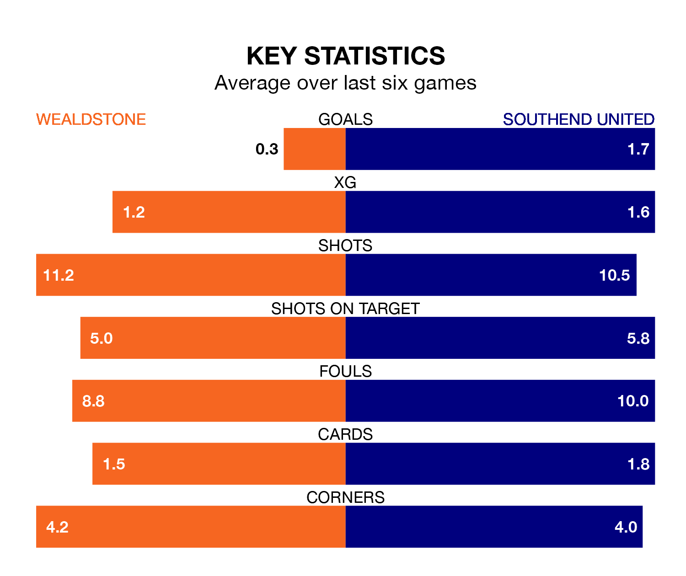

Southend United are strong favourites to take all three points despite Wealdstone's home advantage in Tuesday's late match at Ruislip Manor Sports & Social Club.
*Betting Company* are offering odds of 1.83 on Southend sealing the win, with the visitors sitting seventh in the National League table.
Wealdstone, who are 20th in the league and 22 points behind the Shrimpers, are priced at 3.7 to win. A draw is set at 3.6.
Wealdstone are in terrible form in the National League, with no wins and a draw from their last six games.
With three wins and three draws over that period, Southend's form is much better – they have taken 12 points from 18, compared to the hosts' one.
With 51 goals in 41 games so far this season, Wealdstone are scoring at below the league average rate with 1.2 goals per game. And they are conceding more than average, letting in 65 goals at a rate of 1.6 per game.
United, meanwhile, are average scorers, with 1.5 goals per game. They have conceded 1.0 goal per game.
In the last five years, Wealdstone and Southend have played each other on five occasions. Wealdstone won one of them, Southend two, and they drew twice.
On average, Wealdstone scored 0.6 goals and the Shrimpers 0.8 in those matches.
Their last meeting was on March 5, when they played out a 1-1 draw.
Wealdstone's last match was on Saturday, a 4-0 loss against Boreham Wood.
Southend beat Boreham Wood 4-2 last time out, on April 1, with Jack Bridge (two), Gus Scott-Morriss and James Morton on the scoresheet.
Updated: 14:47 (UTC), 09/04/24